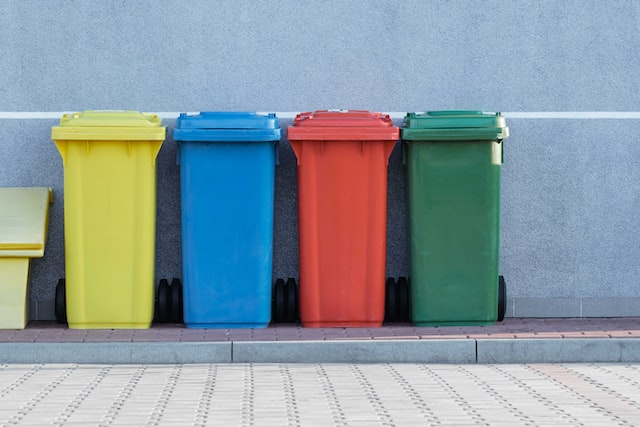

Qui sommes-nous ?
Eco-organisme à but nonlucratif, nous oeuvrons à la sensibiliation et l'information sur le devenir de nos déchets, ainsi que sur les moyens de les recycler et de les éviter.
Recycler c'est protéger
En recyclant nous réduisons cet impact. Mais le recyclage est encore peu appliqué et parfois mal appliqué, tous les plastiques ne se recyclent pas ! Pour une action réellement efficace nous devons informer sur le traitement de ces déchets et reduire leur production.